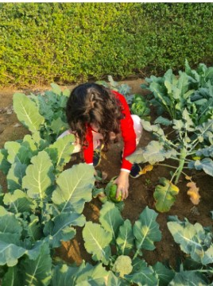

“With wrong farming methods, we turn fertile land into desert. Unless we go back to organic farming and save the soil, there is no future.” - Jaggi Vasudev
This quote expresses the need for change in farming methods and is exactly what me and my family embody. In our quaint farm on the outskirts of Gurgaon, we practice organic farming. There are 4 main fields and they grow a myriad of scrumptious fruits and vegetables all year round. We started this type of farming approximately 10 years ago and ever since, we have become ever so involved with the process.
As I have grown up and have started to understand the global issue of climate change, I have only valued the importance of such changes to our lifestyle. Pesticides corrode the soil and rob crops of their nutrients unlike organic crops. This makes naturally grown crops both a healthier and more eco-friendly option.
According to the WHO, 1000 pesticides are used annually which make inorganic farming a leading cause of land degradation. Growing organic crops or supporting farmers that do, are actions that aid towards environmental conservation and ultimately, a more hopeful future.I hope this website inspires others to adopt such sustainable practices as well to ultimately contribute towards environmental conservation.